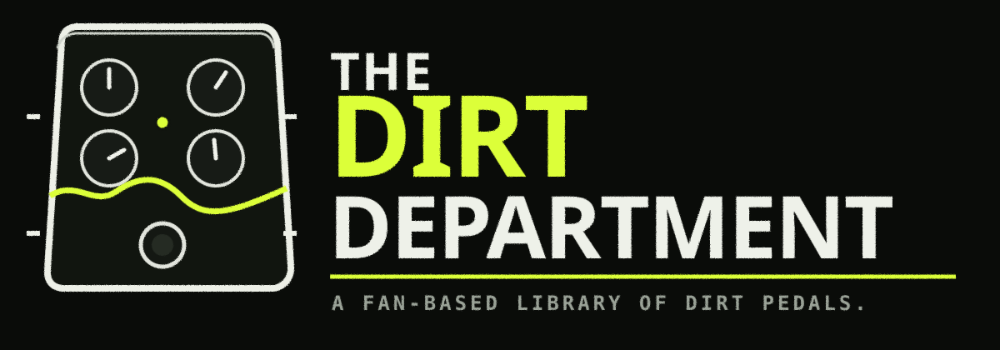

Builder directory
Builders
Browse the archive by maker. Each builder page is a derived view of the canonical catalog, including current, discontinued, versioned, and edition records where documented.
Loading…

BUILDER DIRECTORY
Browse the archive by maker. Each builder page is a derived view of the canonical catalog, including current, discontinued, versioned, and edition records where documented.